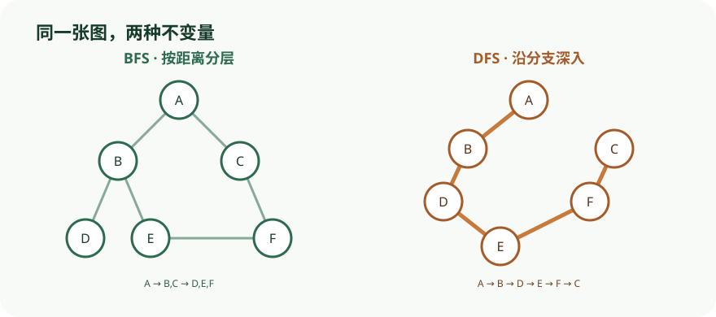

在同一张图上切换 BFS 与 DFS 的状态，观察队列分层和递归回退的差异。
依据本地课程资料 lectures/chap3.pdf、dis04.pdf 重绘；交互用于解释算法状态与证明不变量，不替代正文中的完整论证。

CS170 · 第 4 讲
用 DFS/BFS、连通分量、DAG 与强连通分量把全局图结构拆成可分析的局部结构。
一个图由顶点集 V 与边集 E 共同确定。在计算机中存储图有两种基本方式，它们对后续算法的选择有决定性影响。
邻接矩阵是一个 n × n 数组（其中 n = |V|），其元素定义为：a_ij = 1 若存在从 v_i 到 v_j 的边，否则为 0。对于无向图，矩阵是对称的。它的最大优势是边的存在性查询可在 O(1) 时间内完成——只需一次内存访问。然而，矩阵本身占据 Θ(n²) 空间，当边数远小于 n² 时会造成巨大浪费。
邻接表则为每个顶点维护一条链表，存放从该顶点出发的边所指向的邻居。整个结构的空间开销为 Θ(|E|)（有向图每条边出现一次，无向图出现两次）。代价是检查某条特定边 (u,v) 是否存在需要遍历 u 的邻接表，不再是常数时间；但遍历某个顶点的所有邻居却异常高效——而这恰恰是图算法中最频繁的操作。
稠密与稀疏的关键判据是 |E| 在范围 [|, |V|²] 中的位置：靠近上界为稠密图，靠近下界为稀疏图。以万维网为例，已知顶点数达数十亿，但每个页面平均仅有约六个超链接，|E| 仅比 |V| 略大，属于极度稀疏。此时邻接矩阵需要数千万太比特的内存，远超全球存储总量；而邻接表仅需数 TB，完全可以随身携带。表示方法的选择本质上由图的稀疏程度决定。
假设一个无向图有 |V| = 1000 个顶点、|E| = 3000 条边。邻接矩阵需要 1000² = 10⁶ 个条目；邻接表每条边存储两次，共约 2|E| = 6000 个条目。后者空间仅为前者的 0.6%，且遍历邻居的操作在邻接表上远快于在矩阵的整行扫描。因此对于这种稀疏图，邻接表是更优选择。
深度优先搜索（Depth-First Search, DFS）是一种线性时间算法，能揭示图的大量结构信息。其核心子程序 explore(G,v) 从顶点 v 出发，借助粉笔（visited 数组，标记已访问顶点以防绕圈）与绳子（栈，用于回到之前发现但未及探索的岔路）两种原语遍历所有从 v 可达的顶点。算法首次发现顶点时调用 previsit，最终离开时调用 postvisit。
伪代码： procedure explore(G, v) visited(v) = true previsit(v) for each edge (v,u) in E: if not visited(u): explore(u) postvisit(v)
正确性：explore 不会越界（只沿边移动），也不会遗漏——若存在从 v 到某顶点 u 的路径，取路径上最后一个被访问的顶点 z 及其后继 w，当 explore 处理 z 时必然会发现并递归访问 w，矛盾。这本质上是一种归纳论证。
实际遍历中经过的边构成树边（tree edges），形成搜索树；被忽略的边则指向已访问顶点，称为回边（back edges）。
完整的 DFS 在外层循环中反复调用 explore，确保每个顶点恰好被探索一次： procedure dfs(G) for all v in V: visited(v) = false for all v in V: if not visited(v): explore(v)
时间复杂度：步骤 1（标记与 pre/postvisit）总计 O(|V|)；步骤 2 中每条边 {x,y} 在 explore(x) 与 explore(y) 中各被检查一次，总计 O(|E|)。整体为 O(|V|+|E|)，与输入规模成线性关系，已是最优。
连通分量：无向图的一个连通分量是极大连通子图。explore 恰好能识别出起点所在的连通分量。在 previsit 中设置 ccnum[v] = cc，并在每次外层循环调用 explore 前递增 cc，即可为所有顶点标记连通分量编号，从而在线性时间内完成连通性判定与分量分解。
在图 3.6(a) 的 12 顶点图上从 A 开始 DFS（按字母顺序打破平局）。explore(A) 遍历 A→B→E→I→J 等，形成第一棵搜索树；外层循环随后从未访问的 C 重启，得到第二棵树 C→D→H→L→K→G；最后从 F 重启得到第三棵树。三棵树构成一片森林，对应三个连通分量：{A,B,E,I,J}、{C,D,G,H,K,L}、{F}。
DFS 可直接用于有向图，但需严格沿边的方向遍历。此时边的分类更为精细：树边（tree edges）属于 DFS 森林；前向边（forward edges）指向非子节点的后代；后向边（back edges）指向祖先；交叉边（cross edges）则指向既非后代也非祖先、且已完成探索的顶点。
借助 pre 与 post 时间戳（由全局计数器 clock 在 previsit/postvisit 时递增），可以精确判定边 (u,v) 的类型：若 pre(u) < pre(v) < post(v) < post(u)，则 u 是 v 的祖先，边为树边或前向边；若 pre(v) < pre(u) < post(u) < post(v)，则 v 是 u 的祖先，边为后向边；若两个区间不相交（如 pre(u) < post(u) < pre(v) < post(v)），则边为交叉边。
环检测：有向图存在环当且仅当 DFS 中发现后向边。一方面，后向边 (u,v) 加上搜索树中从 v 到 u 的路径即构成环；另一方面，取环上最先被发现的顶点 v_i，其前驱在搜索树中必为它的后代，因此该入边是后向边。
DAG 的拓扑排序：有向无环图（DAG）没有后向边，因此每条边 (u,v) 都满足 post(u) > post(v)。将顶点按 post 值递减排序，即可得到一个线性序，使得所有边都从早指向晚——这正是拓扑排序。该性质同时表明：无环性、可线性化、DFS 中无后向边三者是等价的。此外，DAG 中 post 最小的顶点必为汇点（无出边），post 最大的顶点必为源点（无入边），因此每个 DAG 至少有一个源点和一个汇点。
无向图的连通性很直接，但有向图的连通性更为微妙。仅凭底层图"连在一起"并不提供有用信息（例如图 3.9(a) 中 G 无法到达 B）。正确的定义是：顶点 u 与 v 强连通，当且仅当存在从 u 到 v 的路径且存在从 v 到 u 的路径。
这一关系是等价关系，将 V 划分为若干个强连通分量（Strongly Connected Components, SCCs）。每个 SCC 是极大的双向连通子图。
将每个 SCC 收缩为一个超节点（meta-node），并在超节点之间按原图方向连边，得到收缩图（meta-graph）。收缩图必定是一个 DAG——因为若收缩图中存在环，则环上所有 SCC 会因彼此双向可达而合并为一个更大的 SCC，矛盾。
这一结论揭示了有向图连通性的二层结构：顶层是一个简单的 DAG（可拓扑排序、结构清晰）；若需更精细的信息，则可深入某个超节点内部，查看完整的强连通分量。这种分层视角是后续算法（如 2-SAT、蕴含图）的重要基础。
在讨论如何高效找出所有强连通分量之前，我们需要更精确地理解深度优先搜索（DFS）的后序编号（post number）与 SCC 结构之间的关系。这些性质是整个算法的理论基础。
性质 1（可达性封闭）。若从节点 \(u\) 启动 explore，则当且仅当所有从 \(u\) 可达的节点都被访问过后，该调用才会终止。这意味着：如果我们恰好在某个汇点 SCC（sink SCC，即在 meta-图中没有出边的 SCC）内部启动 explore，那么此次调用将恰好遍历该 SCC 的全部节点后停止。图 3.9 中有两个汇点 SCC，例如从节点 K 启动 explore，会完整遍历较大的那个 SCC 后停下。
这给出了一种找出一个 SCC 的思路，但留下两个关键问题：(A) 如何确定一个节点必定落在某个汇点 SCC 中？(B) 找到第一个 SCC 之后如何继续？
性质 2（源点 SCC 中的最大后序编号）。在 DFS 中后序编号最大的节点必定位于某个源点 SCC（source SCC）中。
性质 3（SCC 之间的后序编号偏序）。设 \(C\) 与 \(C'\) 是两个不同的强连通分量，若存在从 \(C\) 中某节点到 \(C'\) 中某节点的边，则 \(C\) 中的最大后序编号大于 \(C'\) 中的最大后序编号。
证明。分两种情况。若 DFS 先访问 \(C\)，则由性质 1，\(C\) 与 \(C'\) 都将在搜索「卡住」前被完全遍历，因此 \(C\) 中第一个被访问的节点的后序编号高于 \(C'\) 中所有节点。若 DFS 先访问 \(C'\)，则搜索会在遍历完 \(C'\) 后就卡住，根本不会访问 \(C\)，此时结论直接成立。
性质 3 表明：将 SCC 按其最大后序编号降序排列，即可对 SCC 进行线性化。这推广了 DAG 上的拓扑排序算法——在 DAG 中，每个节点自身就是一个 SCC。
性质 2 能帮我们在原图 \(G\) 中找到一个源点 SCC 中的节点，但我们真正需要的是汇点 SCC 中的节点。看似手头的工具与需求恰好相反，而反向图（reverse graph）的概念恰好弥合了这一落差。
反向图 \(G^R\)。\(G^R\) 与 \(G\) 拥有相同的节点集，但所有边的方向反转，即 \(E^R = \{(v, u) : (u, v) \in E\}\)。关键观察是：\(G^R\) 与 \(G\) 具有完全相同的强连通分量（因为强连通性只关心双向可达，反转所有边不改变任意两节点间的双向可达关系）。
因此，对 \(G^R\) 运行 DFS，后序编号最大的节点会落在 \(G^R\) 的某个源点 SCC 中——而这恰好对应于原图 \(G\) 的一个汇点 SCC。问题 (A) 由此得解。
问题 (B) 的解决。找到第一个汇点 SCC 之后如何继续？性质 3 再次给出答案：当我们找出第一个 SCC 并将其从图中删除后，剩余节点中后序编号最大的那个必定属于剩余图中的一个汇点 SCC。因此，我们只需沿用第一步在 \(G^R\) 上得到的后序编号，依次输出第二个、第三个 SCC，直到全部输出完毕。
综合以上分析，我们得到 Kosaraju 算法（Kosaraju's algorithm），它通过两次 DFS 在线性时间内找出有向图的所有强连通分量。
算法步骤
explore 恰好遍历一个 SCC。伪代码
Kosaraju(G):
G_rev = reverse(G) // 构造反向图
post = DFS(G_rev) // 第一次 DFS，得到后序编号
order = vertices sorted by decreasing post
visited = set()
SCCs = []
for u in order:
if u not in visited:
component = explore(G, u, visited)
SCCs.append(component)
return SCCs
该算法的时间复杂度为 \(O(V + E)\)，常数因子约为普通 DFS 的两倍。
实现细节：构造 \(G^R\) 的邻接表只需遍历原图每条边一次，耗时 \(O(V + E)\)；而后序编号的范围是 \(1\) 到 \(n\)，可用计数排序在 \(O(n)\) 内完成排序。
以图 3.9 的有向图为例，演示 Kosaraju 算法的完整执行过程。
第一步：在 \(G^R\) 上运行 DFS
假设按字典序（A, B, C, ...）作为节点选择的优先级，对反向图 \(G^R\)（如图 3.10 所示）运行 DFS，得到后序编号。按后序编号降序排列的节点序列为：
\[G,\ I,\ J,\ L,\ K,\ H,\ D,\ C,\ F,\ B,\ E,\ A\]
第二步：在 \(G\) 上按降序剥离 SCC
按照上述顺序依次在原图 \(G\) 上对未访问节点启动 explore：
最终，算法按以下顺序输出强连通分量：
\[\{G,H,I,J,K,L\},\ \{D\},\ \{C,F\},\ \{B,E\},\ \{A\}\]
注意第一个 SCC \(\{G,H,I,J,K,L\}\) 正是图 3.9 中较大的那个汇点 SCC。
Kosaraju 算法由两次 DFS 构成，每次耗时 \(O(V + E)\)。加上构造反向图的 \(O(V + E)\) 和计数排序的 \(O(n)\)，整体时间复杂度为 \(O(V + E)\)，是线性时间算法。
与网页抓取的联系
实际中的万维网图并非预先给定，节点需要在搜索过程中逐个发现，且递归不可行。网页抓取（crawling）使用的算法与 DFS 非常相似：维护一个显式栈，存放已发现但未探索的节点。这个「栈」并非严格的 LIFO——它优先处理看起来「最有趣」的节点（启发式准则），目的是防止栈溢出，并确保未探索的节点极不可能通向大片新区域。
抓取通常由多台计算机并行执行：每台计算机从栈顶取下一个待探索节点，下载对应的网页文件，扫描其中的超链接。发现新文档时不做递归调用，而是将其压入中央栈。判断一个文档是否「新」以及为其命名的方式是通过哈希（hashing）。研究者曾在 Web 图上运行 SCC 算法，发现了非常有趣的结构。
依据本地课程资料 lectures/chap3.pdf、dis04.pdf 重绘；交互用于解释算法状态与证明不变量，不替代正文中的完整论证。

邻接矩阵的 O(1) 边查询优势被其 Θ(|V|²) 的空间开销所抵消。对于稀疏图（如万维网），邻接表的空间 Θ(|E|) 远小于矩阵，且遍历邻居的操作更高效。表示方法的选择取决于 |E| 相对于 |V|² 的大小。
有向图的正确连通概念是强连通：必须双向都有路径。仅底层无向图连通并不能保证顶点互相可达，因此需要强连通分量这一更精细的划分。
拓扑排序仅适用于有向无环图（DAG）。即使底层无向图连通，只要存在有向环，拓扑排序就不可能。无环性、可线性化、DFS 中无后向边三者等价，与单纯的连通性无关。
根据性质 2，后序编号最大的节点落在源点 SCC 中，而非汇点 SCC。为了定位汇点 SCC，必须先在反向图 G^R 上运行 DFS。
算法只在 G^R 上运行一次 DFS 来获取后序编号，第二次遍历是在原图 G 上按后序编号降序逐个剥离 SCC，并非在 G^R 上再次提取 SCC。
问题：关于图的邻接矩阵与邻接表表示，以下哪项说法正确？
问题：在有向图的 DFS 中，设边 (u,v) 的两个端点满足 pre(u) < post(u) < pre(v) < post(v)，则该边属于哪种类型？
问题：在 Kosaraju 算法中，为什么需要在反向图 G^R 上运行第一次 DFS？
问题：关于 Kosaraju 算法的时间复杂度，下列哪项正确？
lectures/chap3.pdf · 本段对应小节 · confidence: high · 3.1.1 邻接矩阵与邻接表的空间/时间权衡；3.2 无向图 DFS 的 explore 过程、正确性论证与 O(|V|+|E|) 复杂度；3.2.3 连通分量标记；3.2.4 pre/post 序与嵌套区间性质；3.3.1 有向图边分类与 pre/post 序判定；3.3.2 DAG 的环检测与拓扑排序；3.4 强连通分量定义与收缩图的 DAG 性质lectures/chap3.pdf · 本段对应小节 · confidence: high · 本段详细阐述了性质 1–3、反向图 G^R 的构造动机，以及两步算法的具体描述与图 3.9 的执行示例。